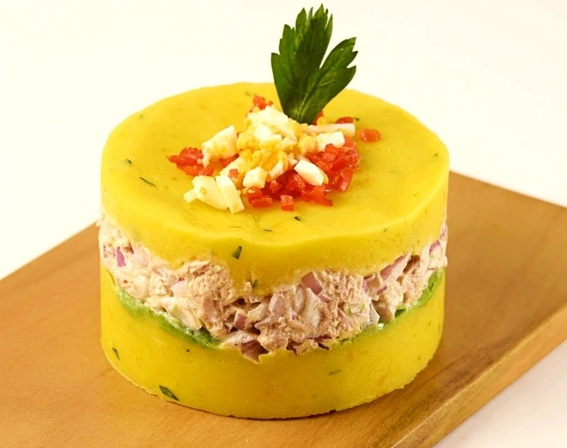

Causa (Potato Caserole)

Description
This is the Peruvian appetizer or starter par excellence: a perfect dough of mashed potato made with ají amarillo chili pepper layered with tuna fillet and a slight hint of mayonnaise topped off with a slice of boiled egg.
It is a dish that is served cold and is very refreshing. It is also very versatile, as it can be prepared with different fillings, such as chicken, octopus, avocado, prawns, etc.
Ingredients
For the potato base:
- 3 pounds floury potatoes
- 1/2 cup olive oil
- 3 aji amarillo chili peppers very finely chopped
- Juice of two limes
- Salt and pepper to taste
- A few sprigs of chopped parsley
For the filling:
- 5 ounces of cannned or fresh tuna 1 can
- 1/2 onion chopped
- 1 tablespoon of mayonnaise
- 1/2 avocado sliced
- 2 hardboiled eggs chopped into cubes
- 1 aji limo chili pepper chopped finely, or another similar chili pepper
Instructions
- Place the unpeeled potatoes in a large pot of cold water, adding 2 tablespoons of salt. Bring it to a boil and boil the potatoes until they’re cooked and soft. Strain and set aside to cool.
- When the potatoes have cooled sufficiently, remove the skin. Pass them through a potato ricer three times until the dough achieves a smooth and soft consistency. Add the olive oil, ají amarillo peppers, salt and pepper to taste and the sprigs of parsley. Knead the potato dough until you get a pliable and form texture.
- To serve, use a greased 3-inch diameter mini-springform pan to help you put each individual causa together. Spread the potato dough on the base, about 1 inch high. Then place a layer of avocado slices, followed by a layer of the tuna filling, and finish your causa with another 1 inch layer of potato dough. Remove the springform and repeat 3 more times.
- Decorate each serving with chopped egg and ají limo chili pepper, and enjoy!
Notes
This is a starter served cold, and can be kept in the fridge for a few hours (up to a maximum of 12 hours) but flavor-wise it really tastes best when it has just been prepared.